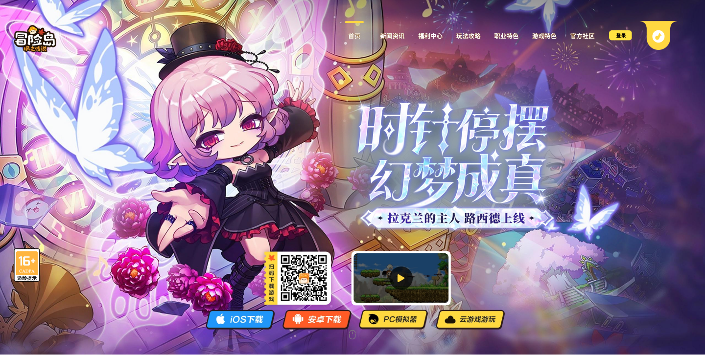
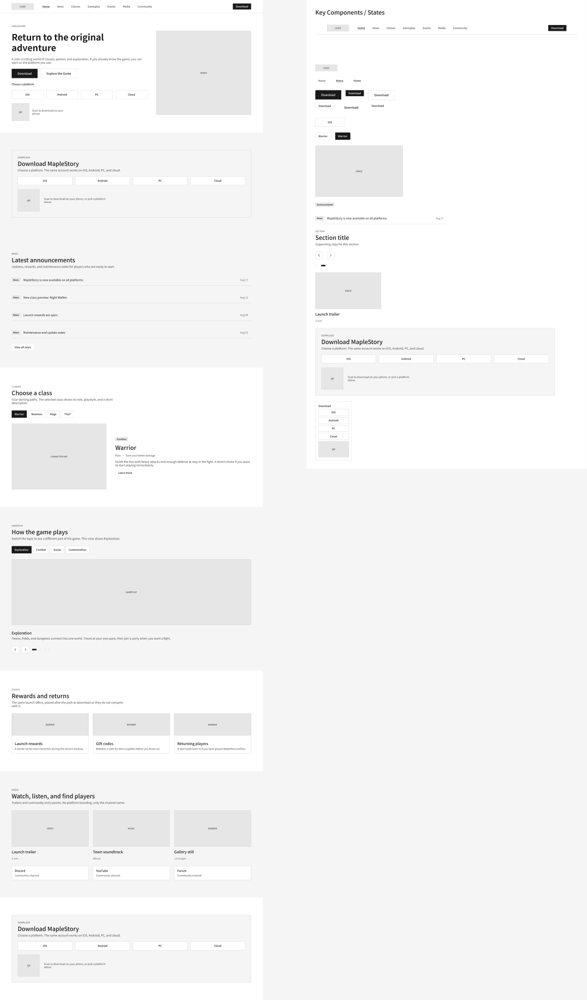
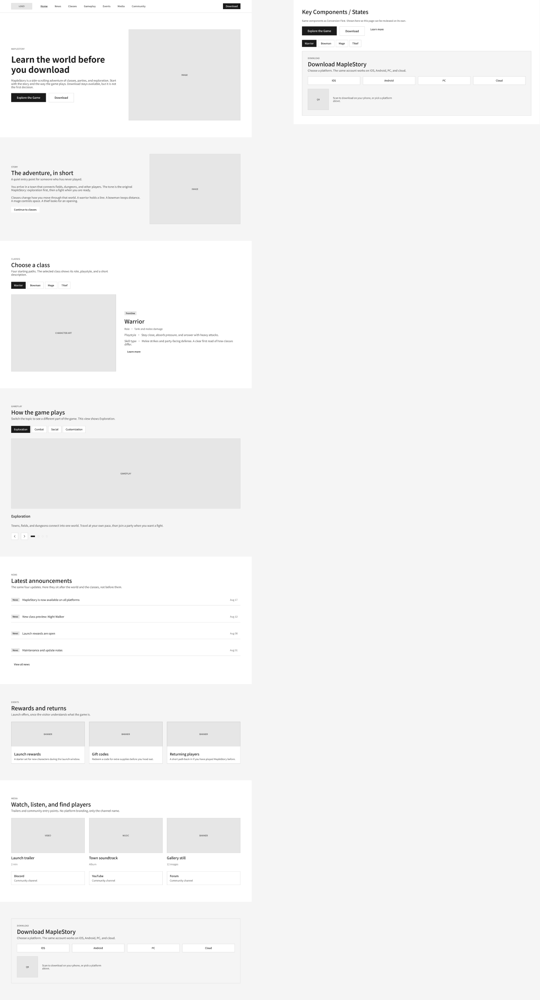
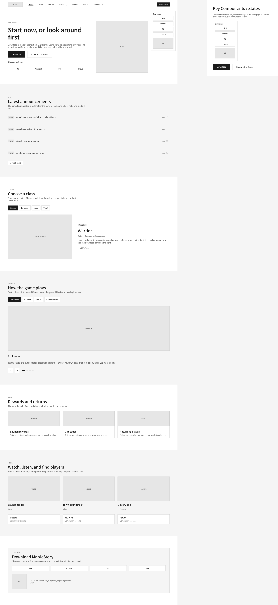
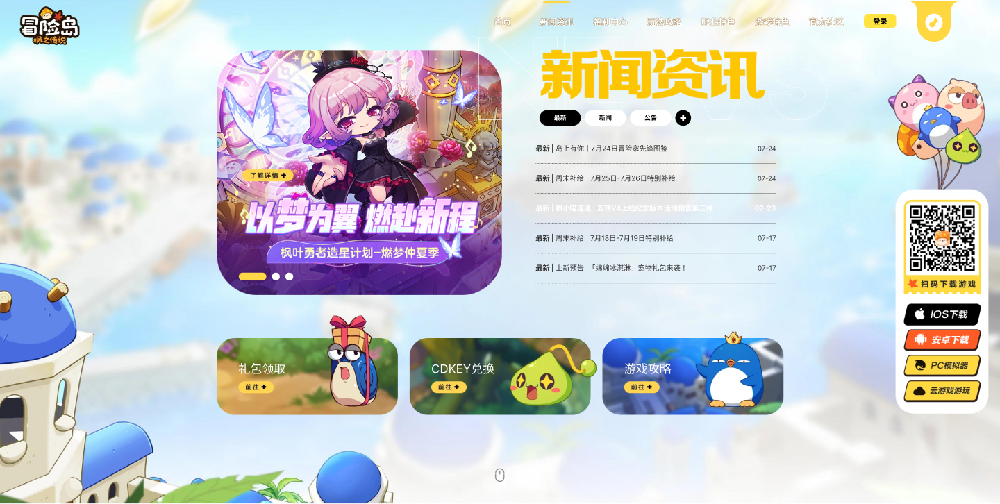
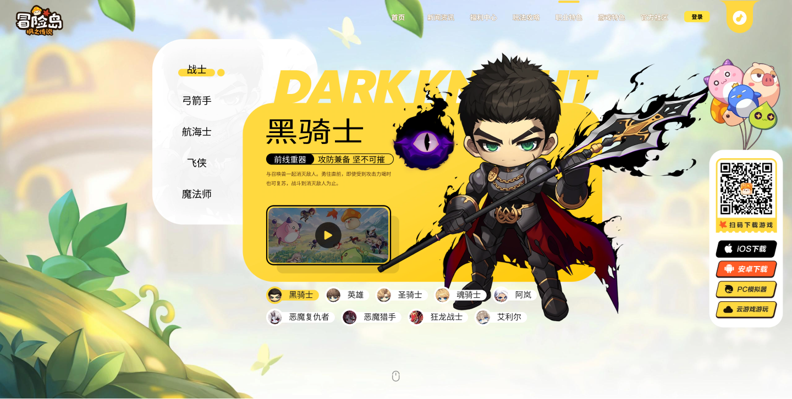
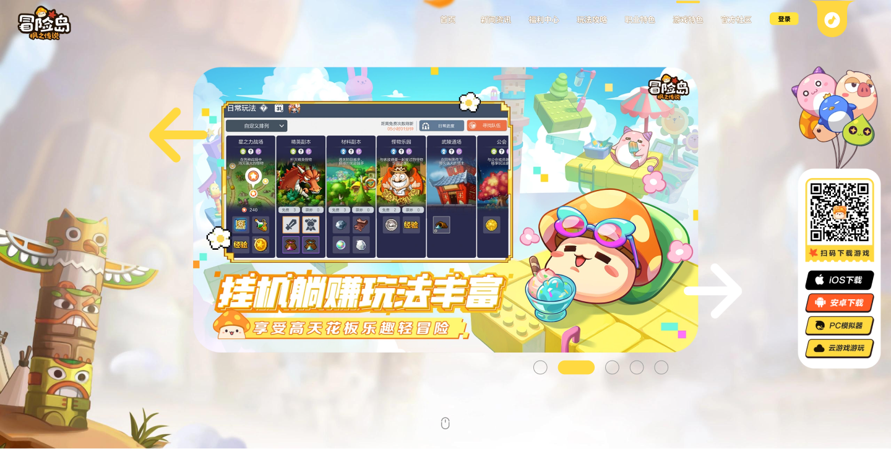
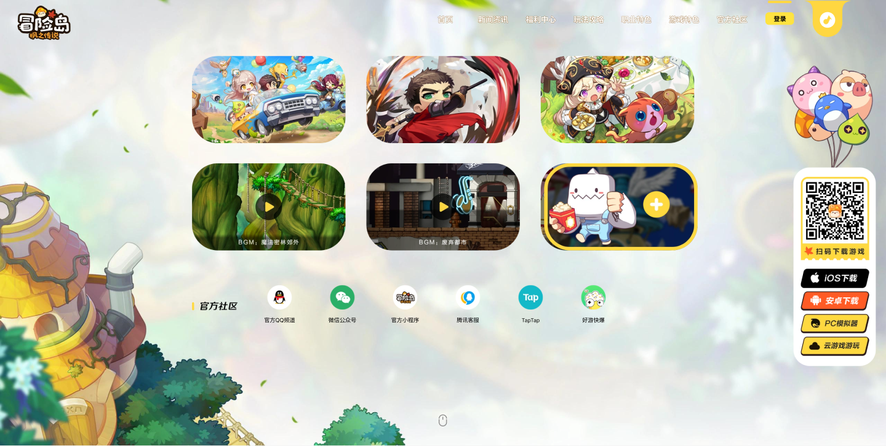

Returning players
Already familiar with the IP. Likely to arrive for reservation, download, a new version, or an event.
Need / A direct route to action.Tencent Games / China game launch / 2023
ShippedReturning players wanted a fast way in. New players needed a reason to begin.
I owned the homepage UX and UI for the China launch of MapleStory: 冒险岛：枫之传说—balancing multi-platform download with enough world, class, and gameplay context to support a first decision.

01 / Product tension
This was a new launch site, not a redesign.
The game had not launched when I joined. The website needed to go live first, support reservation and campaign traffic, and then become the primary destination for download, updates, events, news, and evergreen game content.
That meant the homepage could not behave like a single linear funnel. It had to recognize visitors who were already ready to act and visitors who were still deciding.
Two starting points
Already familiar with the IP. Likely to arrive for reservation, download, a new version, or an event.
Need / A direct route to action.Need to understand the world, characters, classes, and gameplay before choosing whether to download.
Need / Confidence before action.A product that changed at launch
Reservation, user acquisition, campaign traffic, and launch information.
Download, versions, events, news, game education, and long-term content.
02 / Three real design explorations
I explored three information hierarchies. Each prioritized a different relationship between learning about the game and acting on that interest.

Strength: the shortest path for returning or campaign-driven players.
Tradeoff: new players are asked to act before they understand the game.

Strength: story, class, and gameplay content builds context.
Tradeoff: high-intent players travel farther to reserve or download.

Strength: immediate action stays prominent while content can build confidence.
Decision: carry the download path through the browsing experience.
Keep the high-intent action continuously available—without forcing every visitor to decide before they are ready.
03 / Final experience
The hero brings QR, iOS, Android, PC emulator, and cloud-game options into one decision area. Instead of sending every user through one generic button, the interface lets them identify the environment that fits them.
Product value / A single destination can manage several platform routes while keeping them connected to game content.
News and campaign content answer “what is happening now,” while the class browser and gameplay modules answer “what kind of game is this?” Persistent download access allows a player to act whenever that exploration becomes enough.
UX principle / Content earns confidence; persistent actions preserve momentum.


The homepage is organized as modular, full-screen sections. Campaign art and announcements can change while the larger destinations—news, classes, gameplay, and community—remain stable.
System value / The site can move from acquisition to ongoing product communication without rebuilding its foundation.


04 / Ownership & collaboration
I designed the complete homepage experience in Figma, using licensed MapleStory assets and original artwork provided by the company’s illustrators. My ownership was the product structure, interface, hierarchy, composition, and interaction—not the creation of every illustration.
I worked with another Product Designer, the Product Manager, UI / Visual Design, Development, Marketing, the Game team, and the Korean MapleStory IP partner. My Design Mentor and the MapleStory Product Manager reviewed the work.
Confirmed outcome
The website shipped several days before the game and continued as its download and content hub after launch.
The live website now carries later campaigns. The 2023 Figma final shown above is the source for this launch case study.
What I carried forward
A launch homepage should give people a direct action when they are ready—and keep earning confidence when they are not. Designing both paths into one system made the experience more useful before launch, on launch day, and afterward.